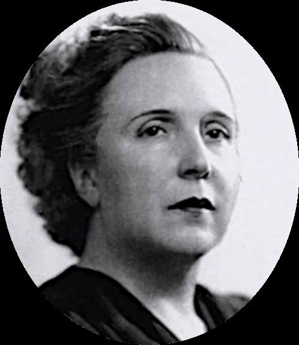
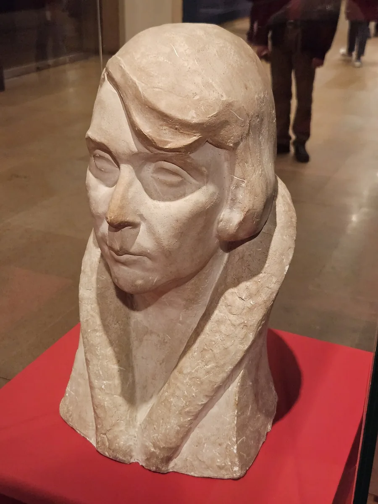

Cultura · Uma mulher, uma obra
Maria Lamas percorreu o país para contar as mulheres que ninguém contava
Dois anos na estrada, fascículos impressos para escapar à censura, três prisões pela PIDE. A reportagem que documentou a vida das mulheres portuguesas nos anos 40 continua a ser o método desta revista.

Há uma pergunta que se faz a qualquer projecto editorial e que quase nunca tem resposta honesta: para quem é que isto serve? Maria Lamas respondeu com dois anos de estrada e uma obra que ainda hoje não tem substituto.
Nasceu em Torres Novas, em 1893, e morreu em Lisboa, em 1983, aos 90 anos. Foi jornalista numa época em que as redacções eram um território masculino, escritora, tradutora, fotógrafa e activista. Em 1928 assumiu a direcção da revista Modas & Bordados e fez dela outra coisa: uma publicação que deixou de falar apenas de casa e de agulhas para falar de trabalho, de direitos e de educação.
Não era o percurso esperado para uma mulher da sua geração. Foi exactamente por isso que serviu.
Dois anos a atravessar o país
Em 1947, uma exposição de livros escritos por mulheres custou-lhe a direcção da revista. Em vez de recuar, Lamas lançou-se no projecto que a tornaria incontornável: percorrer Portugal, de norte a sul e nas ilhas, para documentar como viviam e trabalhavam as mulheres portuguesas.
O resultado saiu em fascículos mensais, entre Maio de 1948 e Maio de 1950, e chamou-se As Mulheres do Meu País. O formato não foi uma escolha estética: era uma forma de circular por baixo da censura do Estado Novo. Cada fascículo apresentava uma região e, dentro dela, uma constelação de vidas — camponesas, operárias, mães, mulheres que trabalhavam de sol a sol e que definiam o próprio destino com uma frase que Lamas registou: «A nossa vida é muito escrava.»
A obra juntou texto e fotografia, e é hoje considerada a primeira grande reportagem sobre as condições de vida das mulheres em Portugal. Na altura, foi tratada por alguns como sensacionalismo. A Academia ficou com ela mais tarde, e o país ficou com o retrato.

O que custou dizê-lo
Lamas não era uma observadora distante. Em 1945 tinha assumido a presidência do Conselho Nacional das Mulheres Portuguesas, que o regime acabaria por encerrar. A sua actividade levou-a três vezes à prisão, em 1949, entre 1950 e 1951 e em 1953, e depois ao exílio em Paris, entre 1962 e 1969.
Há uma tentação, quando se conta uma vida assim, de a transformar em santidade ou em mártir. Nenhuma das duas serve. O que interessa em Maria Lamas é o método: não escreveu sobre as mulheres a partir de um gabinete. Foi ver. Perguntou. Fotografou. Registou o que lhe disseram, incluindo o que era incómodo, e entregou o material ao país em bruto, sem o adoçar.
É uma ideia de jornalismo que hoje se anuncia em congressos e se pratica pouco: em vez de falar sobre um grupo, ir ter com ele.
Porque é que ela é a primeira desta série
A WOMAN'S vai dedicar esta série a uma mulher de cada vez, em vez de listas de livros e de efemérides. Maria Lamas é a primeira por uma razão simples: a assinatura desta revista é «a vida inteira de uma mulher», e foi ela quem, em Portugal, tentou documentar exactamente isso — a vida inteira, e não apenas a parte que cabe numa capa.
A obra esteve décadas quase esquecida, apesar de ter sido um clássico imediato: esgotou-se depressa e voltou a ser procurada por investigadores muito depois. Em 2024, a Fundação Calouste Gulbenkian dedicou-lhe a exposição As mulheres de Maria Lamas, com grande parte do trabalho fotográfico que ela realizou nos anos 40. O catálogo e os originais continuam a ser a melhor porta de entrada para quem a quer ler.
Jorge Calado, que a estudou, escreveu que Lamas foi «porventura a mais notável mulher portuguesa no século XX» e que a sua obra literária e jornalística está «praticamente esquecida». As duas coisas são verdade ao mesmo tempo. Esta peça não corrige o esquecimento. Só se recusa a contribuir para ele.
Onde começar a ler
Quase tudo o que Lamas publicou está fora de catálogo. As edições que existem vivem nas bibliotecas e nas livrarias de alfarrabista, e é por aí que se começa. Os registos abaixo são os da Biblioteca Nacional de Portugal.
- As Mulheres do Meu País (1948-1950)Quinze fascículos mensais, depois reunidos em volume. A reportagem que deu origem a esta peça, com texto e fotografia, e a edição fac-similada de 2002. Registo na BNP · Exposição da Gulbenkian
- A Mulher no Mundo (1952)Dois volumes de história comparada da condição das mulheres, escritos depois da reportagem e durante anos de leitura. A Gulbenkian expôs primeiras edições deste e dos outros livros fundamentais. Gulbenkian
- Para Além do Amor (1935)Romance, anterior à grande reportagem, de uma autora que já publicava ficção, poesia e literatura infantil. Registo na BNP
- Mulheres, Paz, LiberdadeConferências em defesa da paz, do tempo em que a sua actividade política já a levava à polícia política. Registo na BNP
- As Mulheres de Maria Lamas (2024)Catálogo da exposição com coordenação de Jorge Calado, com as fotografias da autora e textos sobre a obra. A melhor porta de entrada visual. Registo na BNP
Fontes
- Obra e percurso. Fundação Calouste Gulbenkian, As Mulheres do meu País, publicado entre 1948 e 1950 em fascículos para fugir à censura do Estado Novo. gulbenkian.pt
- Biografia e prisões. Museu do Aljube, Resistência e Liberdade: Maria Lamas. museudoaljube.pt
- Conselho Nacional das Mulheres Portuguesas e percurso cívico. Comissão para a Cidadania e a Igualdade de Género. cig.gov.pt
- Modas & Bordados, exposição de 1947 e início do projecto. RTP, Maria Lamas, a escritora-jornalista que lutava pelos direitos das mulheres. rtp.pt
- Exposição de 2024 e citação de Jorge Calado. Gulbenkian, Sempre mais alto: a criatividade de Maria Lamas. gulbenkian.pt
- Datas de publicação e carácter da obra. Biblioteca Nacional de Portugal, Dicionário de História de Portugal, verbete sobre Maria Lamas. bnportugal.gov.pt